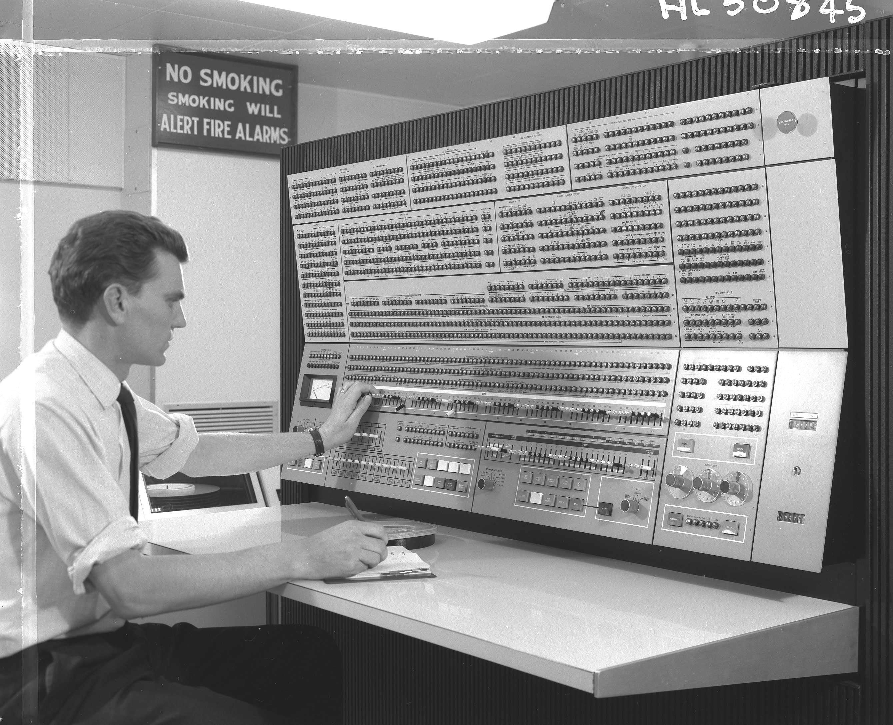

BytesOfProgress
Wiki
History - From 1940 to the Digital Revolution
1940s - The Rise of Electronic Computers
The 1940s heralded the emergence of electronic computers, with the monumental ENIAC making its debut in 1945. This colossal machine harnessed vacuum tubes to perform calculations, inaugurating the age of electronic computing, despite its massive size and power demands.

ENIAC
1950s and 60s - The Transistor Revolution
The 1950s marked a seismic shift with the advent of transistors. These diminutive devices replaced bulky vacuum tubes, ushering in a new era of smaller, more reliable computers. Notably, the IBM 360, introduced in the 1960s, found favor among businesses, setting the stage for the chapters that would unfold.


IBM 360
1970s and 80s - The Pioneers of Personal Computing
The 1970s witnessed the ascent of microprocessors as the brains of computers. In 1975, the Altair 8800, envisioned by Ed Roberts, introduced the concept of microcomputer kits. Meanwhile, in the heart of Silicon Valley, the dynamic duo of Steve Wozniak and Steve Jobs founded Apple, unleashing the Apple I and II that ignited the personal computing revolution. Bill Gates, another visionary, co-founded Microsoft, whose DOS operating system played an integral role in the success of IBM's personal computers.

Altair 8800, Apple II, IBM PC
1980s - The Dawn of GUI and Xerox PARC
The 1980s marked the emergence of the graphical user interface (GUI), revolutionizing how we interacted with computers. A significant leap forward occurred at Xerox Palo Alto Research Center (PARC), where the first graphical user interface was born. This innovation replaced text-based commands with visual icons, windows, and menus, rendering computing more intuitive and accessible. The GUI became popular to users with the release of the Apple Macintosh. Another honorable mention: The Commodore 64 (C64), launched in 1982, was a gaming sensation, leaving a mark on 1980s computing with its affordability, classic games, and school accessibility.

Xerox Alto, Apple Macintosh, Commodore 64
1990s - The Internet and Mobility Revolution
The 1990s witnessed the explosive rise of the internet, connecting computers across the globe. The advent of the World Wide Web transformed information access, while user-friendly interfaces such as Windows and MacOS rendered computers more approachable. The proliferation of laptops, smartphones, and tablets ushered in an era of computing mobility and accessibility.
Early 2000s - Dawn of New Possibilities
The early 2000s continued this digital journey, witnessing the integration of computers into everyday life. The rise of broadband internet led to faster connectivity, enabling richer online experiences. Innovations like USB drives and wireless networks revolutionized data storage and sharing. As computers became more powerful and affordable, their presence extended into education, business, and entertainment domains, reshaping how we work, learn, and communicate. Computers and Laptops became much smaller and thinner in that period of time: A prime example of this is The Apple Macbook Air.
Apple MacBook Air ( 2008 )
2010s / early 2020s and Beyond - AI and Smart Connectivity
We stand on the precipice of the smart computing era, fueled by advancements in artificial intelligence (AI). Computers possess the capacity to learn, recognize patterns, and communicate intelligently. The Internet of Things interconnects everyday objects with the digital realm, creating a seamless network of connectivity.
Conclusion
The history of computers is a testament to boundless innovation, tracing a trajectory from the monumental ENIAC to the convenience of contemporary smartphones. Each chapter of this narrative bears witness to the visionary minds that have sculpted our digital landscape. This remarkable tale underscores the limitless potential of human creativity, propelling us towards a future brimming with digital opportunities.
back